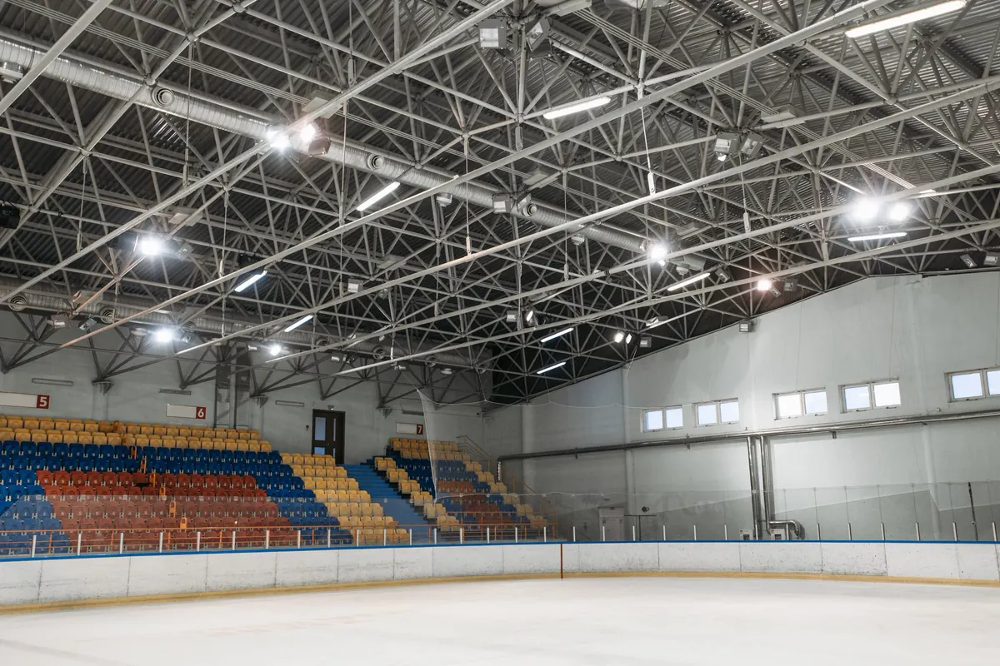
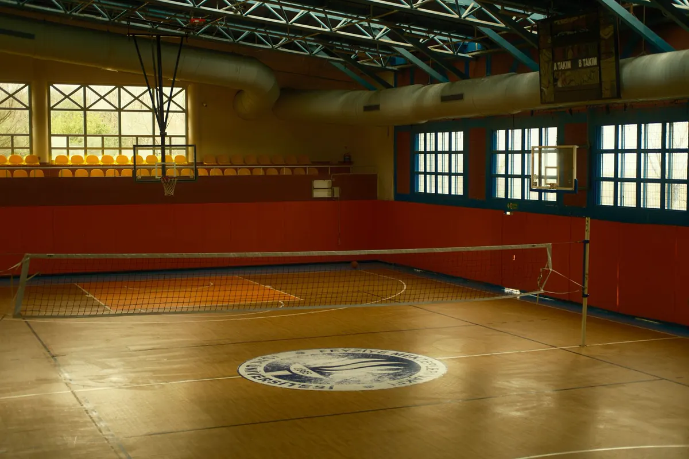
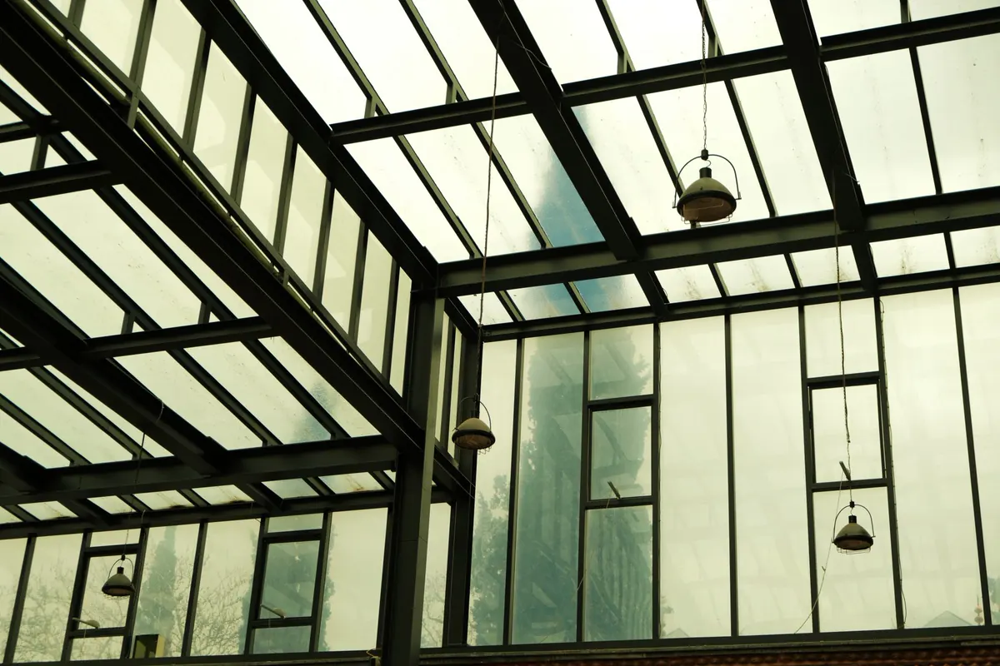

Cobertura de quadra para condomínio, escola, clube e empresa
A Axial cobre quadra existente ou nova em Vitória, Vila Velha, Serra, Cariacica e toda a Grande Vitória: projeto estrutural, fornecimento do aço, fabricação, pintura, montagem e ART — em um só contrato, ou só a etapa que você precisar.
- Condomínio: quadra usável com sol e chuva, e o material pronto para o síndico aprovar em assembleia.
- Escola: aula de educação física sem cancelar por chuva, com telha que não abafa a voz do professor.
- Clube, empresa e prefeitura: vão livre para esporte de verdade, memorial e ART para licitação ou aprovação interna.
Esta página trata da cobertura metálica. Piso esportivo, base e alambrado estão em construção de galpões e quadras; tudo o que fazemos em aço está em estruturas metálicas em Vitória ES.

Por que contratar a Axial para cobrir a quadra
Engenharia própria e ART
Engenheiro responsável técnico do projeto à montagem, com ART registrada no CREA-ES em todo serviço.
Um contrato só
Projeto, aço, fabricação, pintura e montagem com a mesma equipe — sem empurra-empurra entre fornecedores.
Cálculo pelas normas
ABNT NBR 8800 e NBR 14762 para o aço, NBR 6123 para o vento do litoral e NBR 6120 para as cargas.
Pensada para a maresia
Galvanização ou esquema de pintura e fixadores especificados no projeto para o ambiente de cada quadra.
Solda qualificada e END
Procedimento e soldador qualificados (AWS D1.1 como referência) e inspeção por ensaios não destrutivos, que a própria Axial executa.
Montagem segura e documentada
NR-18, NR-35 e plano de içamento na obra; entrega com as-built, registros de montagem e ART.

Arco treliçado, duas águas ou shed: qual cobertura usar
| Critério | Arco treliçado | Duas águas | Shed / uma água |
|---|---|---|---|
| Vão grande sem pilar | Melhor desempenho | Atende, com tesoura mais alta | Mais indicado para vão menor |
| Altura no centro da quadra | Máxima, onde a bola sobe | Boa, sob a cumeeira | Varia ao longo da quadra |
| Fabricação | Exige calandragem das treliças | Mais simples | Simples |
| Calha e drenagem | Água escoa para as laterais | Calha e rufo convencionais | Concentra água em menos pontos |
| Ponto de atenção | Empuxo horizontal nos apoios | Altura da tesoura entra na altura livre | Cuidado com calha e insolação |
| Costuma ser indicado para | Quadra poliesportiva de condomínio, escola e clube | Quadra ao lado de prédio de telhado convencional | Quadra encostada em muro ou divisa; luz natural controlada |
A escolha sai do projeto estrutural, comparando consumo de aço, esforço na fundação, drenagem e interferência com o entorno — não de catálogo.

Altura livre e vão sem pilar no meio da quadra
- Altura livre: do piso ao ponto mais baixo da estrutura sobre a área de jogo. Vôlei e basquete pedem mais que futsal; para campeonato, vale o regulamento da federação. No arco, é medida no ponto mais baixo sobre a faixa de jogo, não só no centro.
- Vão livre: nenhum pilar dentro da quadra nem da faixa de segurança. O vão da estrutura é a largura da quadra somada às faixas laterais — é isso que define o porte das treliças.
- Beiral e refletores: o beiral protege as laterais da chuva inclinada; os refletores ficam acima da altura livre e fora do eixo das tabelas.

Tipos de telha para quadra: luz, ruído de chuva e calor
| Telha | Luz natural | Ruído de chuva | Calor sob a cobertura | Quando usar |
|---|---|---|---|---|
| Metálica simples (trapezoidal ou ondulada) | Nenhuma | Alto em chuva forte | Alto | Uso eventual, menor custo e menor peso |
| Termoacústica (sanduíche com núcleo isolante) | Nenhuma | Baixo | Baixo | Escola e condomínio com aula, festa e reunião |
| Policarbonato (alveolar ou compacto) | Alta | Alto | Alto se usado em excesso; pode ofuscar | Faixas pontuais ou quadras pequenas, como padel |
| Termoacústica com faixas de policarbonato | Controlada | Baixo na maior parte | Equilibrado | Solução mais comum em quadra de uso intenso |
As faixas de policarbonato funcionam melhor no sentido do comprimento, fora do eixo em que o jogador olha para cima. No fechamento lateral, tela ou alambrado retém a bola e deixa o vento passar; fechar demais transforma a quadra em galpão, muda o cálculo de vento e pode trazer exigências de incêndio e SPDA — cobertura metálica de grande área deve ter o SPDA avaliado no projeto.
Vento, calhas e maresia: onde cobertura de quadra falha
- Vento: cobertura de quadra é leve e tem vão grande, então o esforço que manda é a sucção do vento, calculada pela ABNT NBR 6123. Dela saem terças, fixadores da telha, contraventamento e fundação dimensionada também para tração. Telha que voa em temporal é falha de projeto, não azar.
- Calhas: a água da cobertura cai toda nas laterais. Sem calha e condutor dimensionados, encharca a borda do piso e a base. O projeto define calhas, descidas junto aos pilares e a ligação com a drenagem existente.
- Maresia: perto do mar, a proteção contra corrosão faz parte do dimensionamento — parafuso comum em estrutura galvanizada é o primeiro ponto a enferrujar. Veja patologias e corrosão estrutural.
Cobrir quadra que já existe, sem quebrar o piso
Os pilares vão para o entorno — calçada, grama, faixa atrás do alambrado — e a fundação é feita nesses pontos, com demolição localizada e recomposição do acabamento. O piso esportivo não é tocado. Antes de escavar, verificamos tubulação, caixas de drenagem, eletrodutos e a base do piso. Se houver sondagem ou projeto da quadra original, mande junto: reduz incerteza e custo.
Cobertura de quadra em condomínio: como aprovar na assembleia
Cobertura de quadra é obra em área comum e normalmente passa por assembleia, com o quórum previsto na convenção. Proposta vaga gera dúvida, e dúvida adia a votação. Por isso o síndico recebe da Axial um pacote pensado para a assembleia decidir de uma vez:
| O que o síndico recebe | O que mostra | Por que ajuda a aprovar |
|---|---|---|
| Perspectiva da quadra coberta | Como a cobertura vai ficar no condomínio | O condômino vota vendo o resultado, não imaginando |
| Planta e cortes | Posição dos pilares, altura livre, beiral e calhas | Mostra que não há pilar na quadra nem piso quebrado |
| Memorial descritivo | Sistema estrutural, telha, proteção contra corrosão e normas | Permite comparar propostas de igual para igual |
| Proposta com escopo fechado | O que está incluso e o que não está | Evita aditivo surpresa depois da aprovação |
| Cronograma e interferência | Quando a quadra fica fora de uso e como chega o material | Responde à pergunta "e a obra, atrapalha?" |
| ART no CREA-ES | Engenheiro responsável pelo projeto e pela execução | Dá ao síndico respaldo técnico formal |
| Plano de manutenção | Inspeção de fixações, calhas e pintura | Mostra o custo de manter, não só o de construir |
Depois de pronta, a cobertura entra no plano de manutenção predial do condomínio. Em escola e prefeitura, o mesmo pacote atende licitação e aprovação interna. Dependendo do município e do porte, há também aprovação ou comunicação à prefeitura.
Síndico: precisa levar a cobertura para a assembleia?
Mande fotos e medidas da quadra pelo WhatsApp. Retornamos com o escopo no mesmo dia útil.

Como trabalhamos: do contato à entrega com ART
Contato e escopo
Você manda fotos e medidas pelo WhatsApp. Entregável: escopo e caminho sugerido no mesmo dia útil.
Visita técnica
Medição da quadra e do entorno, acesso de caminhão, interferências e drenagem. Entregável: proposta com escopo fechado.
Projeto e aprovação
Cálculo pela NBR 8800, NBR 14762 e NBR 6123. Entregável: perspectiva, planta, cortes e memorial para a assembleia ou licitação.
Fabricação e pintura
Treliças e pilares feitos em oficina, com solda qualificada e END. Entregável: peças prontas para parafusar, com proteção contra corrosão.
Fundação e montagem
Bases no entorno da quadra, içamento planejado, NR-18 e NR-35. Entregável: estrutura, telhas, calhas e fechamento instalados.
Entrega documentada
Vistoria final com o cliente. Entregável: ART, as-built, registros de montagem e plano de manutenção.
Cada etapa pode ser contratada à parte: fabricação de estruturas metálicas, montagem de estruturas metálicas ou ensaios não destrutivos das soldas.
Quanto custa cobrir uma quadra
Não existe preço de tabela honesto para cobertura de quadra. O valor sai destes fatores:
- área a cobrir e vão livre necessário;
- sistema estrutural: arco, duas águas ou shed;
- tipo de telha e fechamento lateral;
- fundação possível no entorno e interferências no subsolo;
- acesso de caminhão e guindaste ao local;
- distância do mar, que define a proteção contra corrosão;
- calhas, condutores e ligação com a drenagem.
Com essas informações, a proposta vem com cada item discriminado — o que o síndico ou a direção precisa para comparar orçamentos de igual para igual.
O que mandar para receber o orçamento
- Fotos da quadra e de todo o entorno (calçada, muro, alambrado, prédios vizinhos);
- Medidas da quadra e das faixas livres em volta;
- Modalidades praticadas (futsal, vôlei, basquete, padel, beach tennis);
- Endereço ou bairro, para avaliar vento e maresia;
- Projeto ou sondagem da quadra, se houver;
- Preferência de telha e de fechamento lateral, se já tiver.
Perguntas frequentes sobre cobertura de quadra
Quanto custa cobrir uma quadra?
O valor depende da área a cobrir e do vão, do sistema estrutural (arco, duas águas ou shed), do tipo de telha, do fechamento lateral, da fundação possível no entorno, do acesso de caminhão e guindaste e da distância do mar, que define a proteção contra corrosão. Por isso não trabalhamos com preço de tabela: com fotos, medidas e o que existe em volta da quadra, devolvemos o escopo e a proposta com cada item discriminado.
Qual é o prazo para cobrir uma quadra?
O prazo depende do tamanho da cobertura, do tipo de telha e do acesso ao local, e é informado na proposta depois do projeto. A maior parte do trabalho acontece na fabricação, fora do condomínio ou da escola; no local, a interferência se concentra na fundação dos pilares e na montagem, e a proposta traz o cronograma para o síndico ou a direção planejar o uso da quadra.
Dá para cobrir uma quadra que já existe sem quebrar o piso?
Na maioria dos casos, sim. Os pilares ficam fora da área de jogo e da faixa de segurança, no entorno da quadra, e a fundação é feita nesses pontos, com demolição localizada e recomposição do acabamento. Antes de escavar, verificamos o que existe embaixo: tubulação, drenagem, eletrodutos e a base do piso. Quando a quadra encosta em muro ou divisa, o projeto estuda pilar junto ao alambrado e fundação de menor área de escavação.
Cobertura de quadra em condomínio precisa de aprovação em assembleia?
Em geral, sim. É obra em área comum que altera a edificação e normalmente exige deliberação em assembleia, com o quórum previsto na convenção e no Código Civil. Entregamos ao síndico o material para a votação: perspectiva, planta e cortes, memorial descritivo, proposta com escopo fechado, cronograma e a indicação da ART. Dependendo do município e do porte, também pode haver aprovação ou comunicação na prefeitura.
Já tenho projeto. Vocês fazem só a fabricação e a montagem?
Sim. Podemos assumir a obra inteira em um só contrato — projeto, fornecimento do aço, fabricação, pintura e montagem — ou só a etapa que você precisa. Com projeto de terceiros, fazemos a conferência técnica antes de fabricar e apontamos o que falta, como detalhe de ligação, fixação de telha ou verificação de vento.
Vocês atendem a minha cidade?
A sede fica em Vila Velha e atendemos toda a Grande Vitória — Vitória, Vila Velha, Serra, Cariacica, Viana, Guarapari e Fundão — além de Anchieta, Aracruz e Linhares. Mandando fotos e medidas pelo WhatsApp, retornamos com o escopo no mesmo dia útil.
Qual é a garantia da cobertura?
Pelo art. 618 do Código Civil, o construtor responde pela solidez e pela segurança da obra durante 5 anos. Além disso, a cobertura é entregue com ART registrada no CREA-ES, as-built e registros de montagem, e com o plano de manutenção de fixações, calhas e pintura.
Já tem cobertura com ferrugem, telha solta ou calha transbordando? Fazemos vistoria e laudo técnico com ART. Se a área de lazer também tem brinquedos, a mesma visita pode incluir o laudo de playground.
Cobertura de quadra na Grande Vitória
Projeto, fabricação e montagem para condomínios, escolas, clubes e empresas da região:
Vai cobrir a quadra do condomínio, da escola ou do clube?
Mande fotos, as medidas da quadra e do entorno. Retornamos com o escopo no mesmo dia útil.